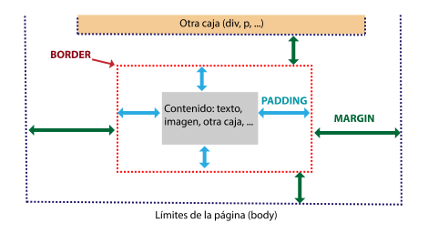

Modelo de cajas y Layout
Elementos inline y block
Los elementos en línea son:
a, span, label, strong, br, input, textarea, abbr,
acronym, b, basefont, bdo, big, cite, code, dfn,
em, font, i, kbd, q, s, samp, select, small, strike,
sub, sup, u, u, var
Algunas características son:
-
Son apilables. No tienen ni margin-top ni margin-bottom
(por mucho que se lo indiques en el CSS). Si tienen
margin-left y margin-right.
-
No respetan ni width ni height. Estas medidas dependerán del tamaño
en píxels de su contenido.
La forma más fácil de saber si un elemento es en línea o no es darle ancho.
Si le das width:100% y ves que la caja no ocupa todo el ancho disponible entonces se trata de un
elemento en línea.
Los elementos bloque son:
div, p, h1, h2, h3, h4, h5, h6, hr, ol, ul, table, li,
address, blockquote, center, dir, dl, fieldset, formisindex,
noframes, noscript, pre, dd, dt, frameset, tbody, td, tfoot,
th, thead, tr
Sus principales características son:
-
Fuerzan un salto de línea (ocupan todo el ancho disponible).
-
Respetan el width, el height, el margin-top y el margin-bottom indicados por el usuario.
El mejor modo de ver si un elemento es en bloque o no es escribir varios seguidos y comprobar
si se fuerza el salto de línea o no.
Si los elementos quedan uno al lado del otro entonces pueden ser de tipo inline-block o en línea.
Modelo de cajas
Los elementos de HTML están contenidos en cajas rectangulares. La etiqueta body es la caja principal
dentro de la cual se van colocando las cajas de las etiquetas que se van creando, las cajas pueden
estar unas dentro de otras, o unas al lado de otras, incluso se pueden superponer. Podemos pensar
en el modelo de caja como un borde rectangular (border) que rodea al contenido, hay un margen interior
que define la propiedad padding y un margen exterior que define la propiedad margin. Todo esto es lo
que se conoce como modelo de cajas de CSS (box model) y es fundamental entenderlo bien para poder
diseñar páginas web con soltura.

- Contenido. En cada caso este contenido es de un tipo, puede ser un texto, una imagen,
una lista, otra caja, ... El contenido depende de cada etiqueta, por ejemplo, la etiqueta div admite
varios tipos de contenido (texto, imágenes, otras etiquetas, ...) mientras que una etiqueta img sólo
admite una imagen como contenido. En nuestro esquema el contenido está representado por el rectángulo
gris.
- Padding (margen interior). Espacio transparente entre el contenido y el borde. Puede
ser de grosor cero. También podemos decir que el padding es el margen interior de la caja. En nuestro
esquema el padding está representado por las dobles flechas azules.
- Border (borde). Línea que rodea el padding, y por lo tanto también al contenido. Puede
ser de grosor cero y por lo tanto invisible. En nuestro esquema el borde está representado por la
línea punteada roja.
- Margin (margen exterior). Espacio transparente rectangular que rodea al borde y sirve
de separación con otros elementos adyacentes. Puede ser de grosor cero. En nuestro esquema el margin
está representado por las doble flechas verdes.
- Background-image (Imagen de fondo). Algunos elementos como los contendores div y los
párrafos p pueden tener una imagen de fondo que se coloca por detrás del contenido, hasta el borde.
En nuestro esquema no hay imagen de fondo. Más adelante veremos un esquema que sí la tiene.
- Background-color (Color de fondo). Si se define un color de fondo, este se coloca
por detrás de la imagen de fondo, hasta el borde. En nuestro esquema no hay color de fondo.